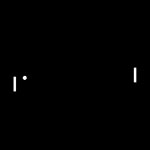
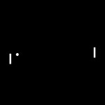

Pong
https://github.com/pokepetter/ursina/blob/master/samples/pong.py


app = Ursina()
window.color = color.black
camera.orthographic = True
camera.fov = 1
left_paddle = Entity (scale =(1 /3 2 ,6 /3 2 ), x=-.7 5 , model ='quad' , origin_x =.5 , collider ='box' )
right_paddle = duplicate(left_paddle, x=left_paddle.x*-1 , rotation_z =left_paddle.rotation_z+1 8 0 )
floor = Entity (model ='quad' , y =-.5 , origin_y =.5 , collider ='box' , scale =(2 ,1 0 ), visible =False)
ceiling = duplicate(floor, y =.5 , rotation_z =1 8 0 , visible =False)
left_wall = duplicate(floor, x=-.5 *window.aspect_ratio, rotation_z =9 0 , visible =True)
right_wall = duplicate(floor, x=.5 *window.aspect_ratio, rotation_z =-9 0 , visible =True)
collision_cooldown = .1 5
ball = Entity (model ='circle' , scale =.0 5 , collider ='box' , speed=0 , collision_cooldown=collision_cooldown)
def update():
ball.collision_cooldown -= time.dt
ball.position += ball.right * time.dt * ball.speed
left_paddle.y += (held_keys['w' ] - held_keys['s' ]) * time.dt * 1
right_paddle.y += (held_keys['up arrow' ] - held_keys['down arrow' ]) * time.dt * 1
if ball.collision_cooldown > 0 :
# after a collision, wait a little while before another collision can occur.
# this is to prevent the ball from colliding multiple times with the same wall because
# it hasn't got time to be moved away from it yet.
return
hit_info = ball.intersects()
if hit_info.hit:
ball.collision_cooldown = collision_cooldown
if hit_info.entity in (left_paddle, right_paddle, left_wall, right_wall):
hit_info.entity.collision = False
invoke(setattr, hit_info.entity, 'collision' , False, delay =.1 )
direction_multiplier = 1
if hit_info.entity == left_paddle:
direction_multiplier = -1
left_paddle.collision = False # disable collision for the current paddle so it doesn't collide twice in a row
right_paddle.collision = True
else :
right_paddle.collision = False
left_paddle.collision = True
ball.rotation_z += 1 8 0 * direction_multiplier
ball.rotation_z -= (hit_info.entity.world_y - ball.y) * 2 0 * 3 2 * direction_multiplier
ball.speed *= 1 .1
else : # hit wall
ball.rotation_z *= -abs(hit_info.world_normal.normalized()[1 ])
# create a particle on collision
particle = Entity (model ='quad' , position =hit_info.world_point, scale =0 , texture ='circle' , add_to_scene_entities=False)
particle.animate_scale(.2 , .5 , curve =curve.out_expo)
particle.animate_color(color.clear, duration=.5 , curve =curve.out_expo)
destroy(particle, delay =.5 )
def reset():
ball.position = (0 ,0 ,0 )
ball.rotation = (0 ,0 ,0 )
ball.speed = 1 0
for paddle in (left_paddle, right_paddle):
paddle.collision = True
paddle.y = 0
info_text = Text("press space to play", y =-.4 5 )
def input(key):
if key == 'space' :
info_text.enabled = False
reset()
if key == 't' :
ball.speed += 5
# TODO: register when the ball exits either side and give points
app.run()